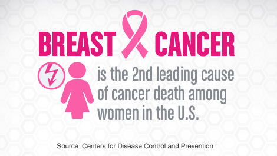
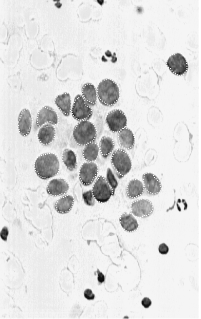
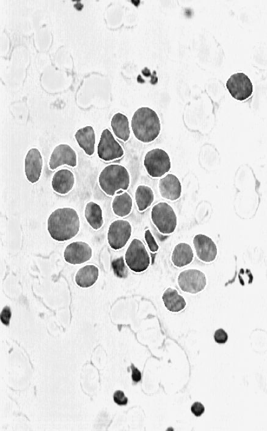

<!DOCTYPE html>
<html lang="en">
<head>
  <link rel="icon" type="image/x-icon" href="img/emoji.png">
  <title>Cytology | Article</title>
  <meta charset="utf-8">
  <meta http-equiv="X-UA-Compatible" content="IE=edge">
  <meta name="viewport" content="width=device-width, initial-scale=1">
  <!-- Bootstrap -->
  <link href="css/bootstrap.css" rel="stylesheet">
  <link href="css/modern-business.css" rel="stylesheet">
  <!--[if lt IE 9]>
    <script src="https://oss.maxcdn.com/libs/html5shiv/3.7.0/html5shiv.js"></script>
    <script src="https://oss.maxcdn.com/libs/respond.js/1.4.2/respond.min.js"></script>
  <![endif]-->
</head>
<body>
  <nav class="navbar navbar-inverse navbar-fixed-top navbar-toggleable-xs" role="navigation">
    <div class="container">

      <div class="navbar-header">
        <ul class="nav navbar-nav navbar-header">
          <li id="home">
            <a href="index.html"><span></span> Cytology</a>
          </li>
        </ul>
      </div>

      <div class="collapse navbar-collapse navbar-ex1-collapse">
        <ul class="nav navbar-nav navbar-right">
          <li id="folder" class="active">
            <a href="folder.html"><span class="glyphicon glyphicon-folder-open"></span></a>
          </li>
          <li id="about">
            <a href="about.html"><span class="glyphicon glyphicon-user"></span></a>
          </li>
        </ul>
      </div>
    </div>
  </nav>

  <div class="container">
    <div class="row">
      <br>
      <h1 class="page-header">Digital Image Analysis
        <small>(Computerized Breast Cancer Diagnosis)</small>
      </h1>
      <br>
    </div>
  </div>

  <div class="container">
    <div class="row">
      <div class="col-sm-1"></div>
      <div class="col-sm-10">
        <div id="myCarousel" class="carousel slide" data-ride="carousel">
        <!-- Indicators -->
        <ol class="carousel-indicators">
          <li data-target="#myCarousel" data-slide-to="0" class="active"></li>
          <li data-target="#myCarousel" data-slide-to="1"></li>
          <li data-target="#myCarousel" data-slide-to="2"></li>
        </ol>

        <!-- Wrapper for slides -->
        <div class="carousel-inner">
          <div class="item active">
            <center></center>
          </div>

          <div class="item">
            <center></center>
          </div>

          <div class="item">
            <center></center>
          </div>
        </div>

        <!-- Left and right controls -->
        <a class="left carousel-control" href="#myCarousel" data-slide="prev">
          <span class="glyphicon glyphicon-chevron-left"></span>
          <span class="sr-only">Previous</span>
        </a>
        <a class="right carousel-control" href="#myCarousel" data-slide="next">
          <span class="glyphicon glyphicon-chevron-right"></span>
          <span class="sr-only">Next</span>
        </a>
      </div>
    </div>
    <div class="col-sm-1"></div>
  </div>
  </div>

  <div class="container">
    <br><hr><br>
    <div class="col-sm-1"></div>
    <div class="col-sm-10">
      <article><font size="5"><h2><b>Introduction</b></h2><hr>
        <p align="justify" style="text-indent:3em;">
          Most breast masses can be accurately diagnosed from the cytological characteristics of their constituent cells. However, diagnostic accuracy depends on the training, experience, and various undefined factors of the person interpreting the cytology. In short, some people diagnose better than others. We previously developed a computer-based classification system which aids in diagnosing breast cells based on the visual assessment of cellular features. Cytological features, previously evaluated visually are now replaced by digitized ones, evaluated by image analysis. In this paper we compare human accuracy in the cytological diagnosis of breast cancer with the accuracy of digital image analysis combined with computer-based classification.
        </p><br>
        <h2><b>Materials and Methods</b></h2><hr>
        <h3><b><i>Fine Needle Aspirates</b></i></h3>
        <p align="justify" style="text-indent:3em;">
          A small drop of viscous fluid was obtained from breast masses by making multiple passes with a 23 gauge needle while negative pressure was being applied to an attached syringe. The aspirated material was expressed onto a silane coated glass slide. A similar slide was placed face down on the aspirate, and the aspirate was spread as the slides were separated with a horizontal motion. Preparations were immediately fixed in 95% ethanol and processed after they were stained with hematoxylin and eosin.
        </p>
        <h3><b><i>The Visual Assessment Process</b></i></h3>
        <p align="justify" style="text-indent:3em;">
          Machine learning for cytological diagnosis consists of two steps. First, we digitally define and extract cellular features from a cytological image of a sample. Second, an expert system diagnoses the sample on the basis of these features. The original version of this work used features which were visually evaluated from breast FNA. This method uses linear programming to generate separating planes that distinguish benign from malignant samples.
        </p>
        <h3><b><i>The Automated Assessment Process</b></i></h3>
        <b>Image Preparation</b><br>
        <p align="justify" style="text-indent:3em;">
          The area on the aspirate slides that was imaged was selected for minimal nuclear overlap. Areas of apocrine metaplasia were avoided. The image for digital analysis was generated by a JVC TK-1070U color video camera mounted atop an Olympus microscope. The slide was projected into the camera with a 63x objective and a 25x ocular. The image was captured by a ComputerEyes/RT color frame grabber board (Digital Vision, Inc., Dedham MA 02026) as a 512x480 Targa file. The resulting image is stored in memory as a 2-dimensional array with each picture element (pixel) having a value between 0 and 255 representing the light intensity at that point.
        </p>
        <b>The User Interface</b><br>
        <p align="justify" style="text-indent:3em;">
          The first step in successfully analyzing the digital image is to specify the exact location of each cell nucleus. This is achieved through use of an interactive user interface developed using the X Window System and the Athena Widget Set on a DECstation 3100. The image is projected onto a computer screen, and the operator uses a mouse button to trace a rough outline of each visible cell nucleus. These outlines are shown in the picture above (2<sup>nd</sup> picture in the carousel).
        </p>
        <b>Snakes</b><br>
        <p align="justify" style="text-indent:3em;">
          Beginning with a user-defined approximate border as an initialization, the precise boundary of the cell nucleus is located by an active contour model known in the Computer Vision literature as a snake. A snake is a deformable spline which seeks to minimize an energy function defined over the arclength of a curve. We define the energy function in such a way that the snake, in the form of a closed curve, conforms itself to the boundary of a cell nucleus. From the 3<sup>rd</sup> picture above in the carousel, we can see the snakes after convergence to cell nucleus boundaries. These boundaries are the final representation of the cell nuclei, after the user is satisfied with the convergence of the snakes.
        </p>
      </article></font>
    </div>
    <div class="col-sm-1"></div>
  </div>

  <ul class="pager">
    <li><a href="folder.html"><span class="glyphicon glyphicon-folder-open"></span></a></li>
    <li><a href="article2.html">Next &gt;&gt;</a></li>
  </ul>

  <div class="container">
    <hr>
    <footer>
      <div class="row">
        <div class="col-sm-12">
          <p> Copyright &copy; Kezia Suhendra 2017</p>
        </div>
      </div>
    </footer>
  </div>

  <script src="https://ajax.googleapis.com/ajax/libs/jquery/1.11.0/jquery.min.js"></script>
  <script src="js/bootstrap.js"></script>
  <script src="js/modern-business.js"></script>
</body>
</html>
